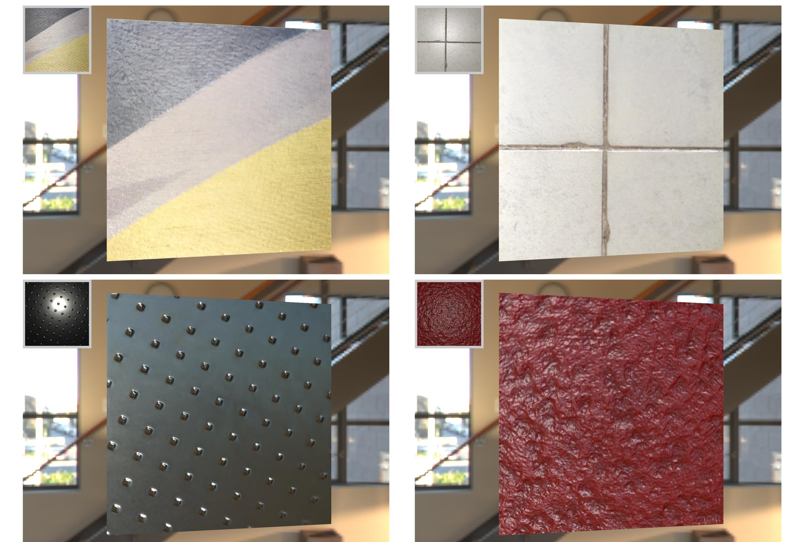
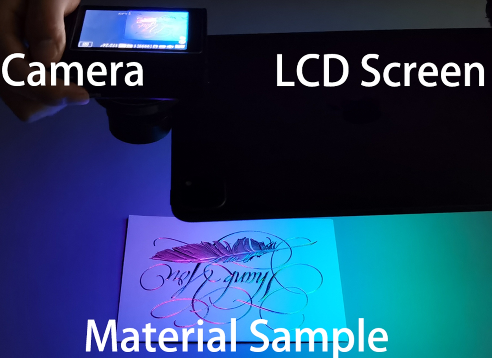
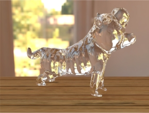
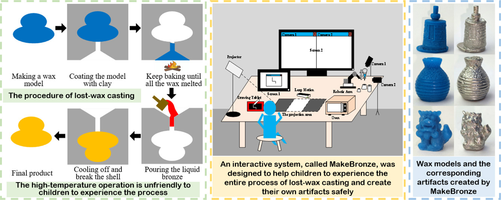

Li Wang （王里）
Email: li_wang@tju.edu.cn
I am a PhD student in Visual Computing
Lab at Tianjin University.
Now, I am a second-year PhD student, and advised by Professor Jiawan Zhang.
In 2020, I obtained my undergraduate degree in Measuring Technology and Instrument.
My research interests lie in appearance modeling and physics-based rendering within the field of computer graphics. At present, I am focused on applying deep learning techniques to the aforementioned domains.
-

DeepBasis: Hand-Held Single-Image SVBRDF Capture via Two-Level Basis Material Model SIGGRAPH ASIA 2023[PDF] [Paper Page]
-

Deep SVBRDF Estimation from Single Image under Learned Planar Lighting SIGGRAPH 2023[PDF] [Paper Page]
-

Transparent Object Reconstruction via Implicit Differentiable Refraction Rendering SIGGRAPH ASIA 2023[PDF] [Paper Page]
-

MakeBronze: An interactive system to promote Chinese bronze culture in children through hands-on experience with lost-wax casting International Journal of Human-Computer Studies 2023[PDF]